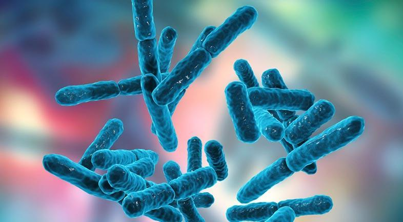
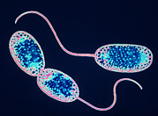
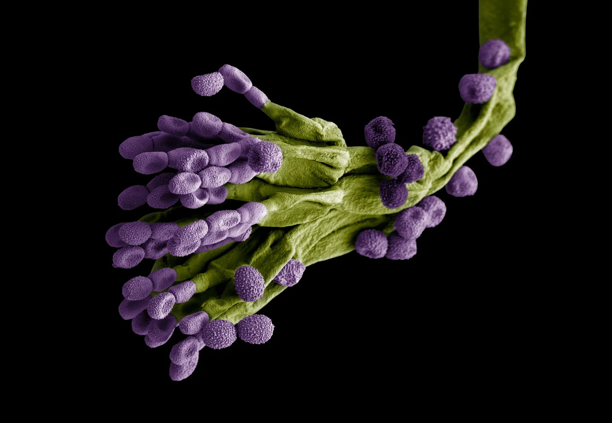
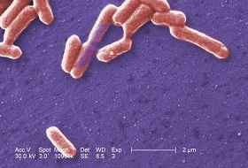
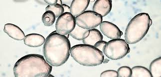
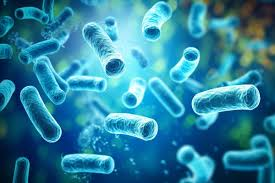

These are some of the applications of beneficial microorganisms in our daily lives.
Agriculture

Bifidobacteria sp.
Helps in the digestion process of animals.

Nitrobacter sp.
Nitrifying bacteria that improve soil fertility.
Medicine

Salmonella sp.
Used in the production of vaccines.

Penicillium chrysogenum
Produces penicillin antibiotics.

Recombinant E. coli
Produces insulin using recombinant DNA technology.
Industry

Yeast
Used in food production such as bread.

Lactobacillus bulgaricus
Used in yogurt and fermented drinks.

Bacillus subtilis
Used in leather processing industries.